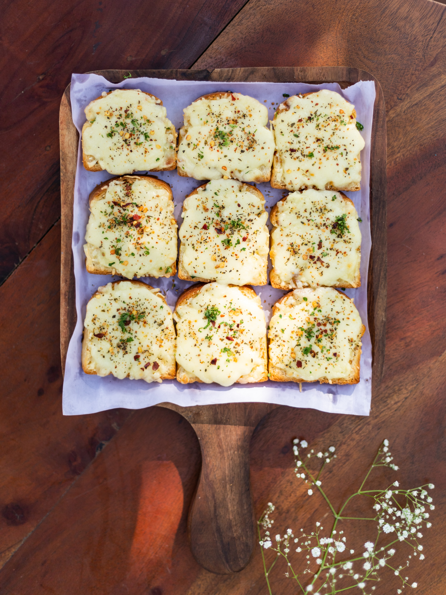

Garlic Bread

The most garlicular bread you ever will taste
Do you love bread? Do you love cheese? Do you love garlic? 3 of the silliest questions I've ever asked.
Of course you do!
Ingredients
- 1 bread loaf
- 100g of butter
- 1/2 tsp salt
- 3 garlic cloves
- 2 cups of mozzarella cheese
- Parsley
Steps
- Preheat the oven to 160C.
- Cut the bread horizontally and mix the garlic and salt.
- Drizzle with the garlic butter.
- Bake for 20 mins until crispy.
- Top with mozzarella and bake for another 7 mins.
- Enjoy!